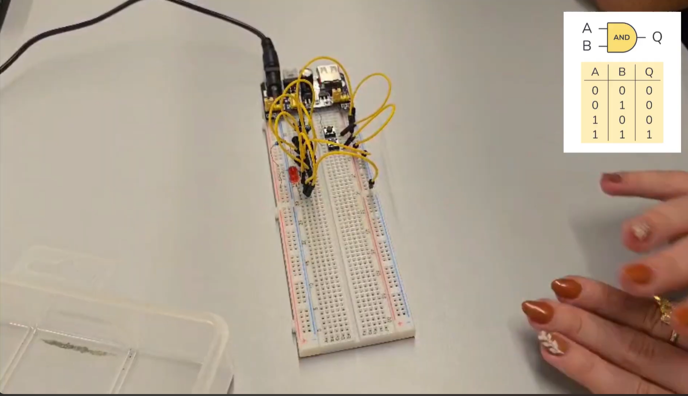
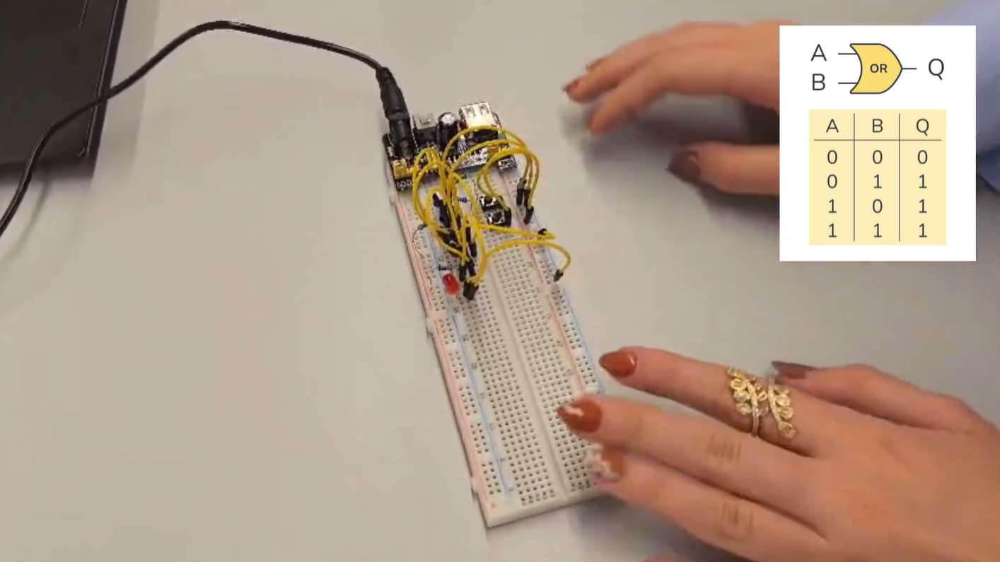
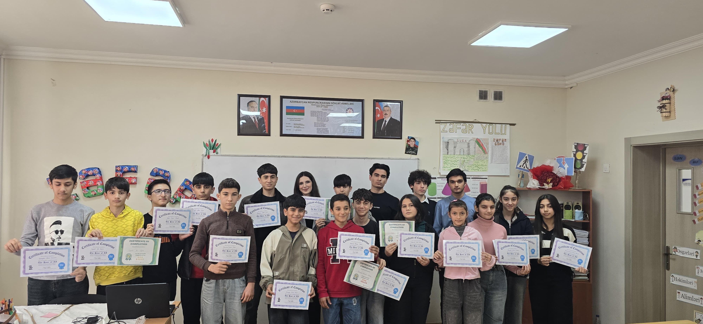

MY PROJECTS
PROJECT 1: How Does Hardware Work?
Course: SITE 1101 – Information Systems Principles
Team: Group 19
Team Members:
- Neman Mustafazade
- Zaka Mammadli
- Seljan Bashirli
- Ruslan Fatiyev
In our SITE 1101 course, we explored how hardware works at the most fundamental level. We constructed basic logic gates NOT, AND, OR, XOR, and NAND using physical components like transistors, resistors, LEDs, and breadboards in our Net Lab. We could have worked on 3 different days to complete this project.
NOT/AND/OR Gates
First lab day:
We created NOT, AND, and OR gates using transistors and resistors.
NOT Gate

AND Gate
OR Gate
Second lab day:
We created NAND gate together with group 17.
NAND Gate

Third lab day:
We created XOR gate together with groups 52, 53, and 81.
XOR Teams


XOR Gate

PROJECT 2: Hour of Code
Course: SITE 1101 – Information Systems Principles
Team: Group 19
Team Members:
- Neman Mustafazade
- Zaka Mammadli
- Seljan Bashirli
- Ruslan Fatiyev
In this project, we applied our knowledge by organizing and teaching a real Hour of Code event for school students. We introduced students to the basics of programming using fun, interactive tutorials on the Microsoft Makecode platform. Our team handled everything from planning the lessons and coordinating with the community center and we presented certificates to the participants.
